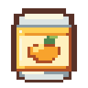

继续快速点击！停手就暂停笑声与扣血

当前动作结束后可释放
七章冒险 · 从这里出发
关于如何从憋笑魔王手中救下公主这件事
电脑键盘 / 手机触控 · 进度保存在本机
新开一局会覆盖本机保存的进度。想接着玩，请返回后选择“继续冒险”。
选择招式强化或被动技能 · 奶球始终可手动发射
战斗和计时已经暂停，可切回手机桌面休息。保留此页面，回来点“继续营救”。关卡进度自动保存在本机，可从标题页继续。
电脑：WASD / 方向键走位F 奶球（按住连发，松手停止）按住空格防御 · Shift 冲撞（通关奶笑村解锁，冷却2秒、最多存2次；冲撞中点击可接续一次）E 大笑 · C 罐头 · V 奶蛋助阵 · Esc 暂停最终关：Q 讲笑话 / 超级大笑大招中：连续点击大按钮 / 连按 R 维持笑声手机：左侧按下出现摇杆，滑动走位；右侧释放技能。可在“手游按键布局”中调整大小和位置，默认保持当前布局。奶蛋助阵：立即张嘴并播放释放音效，结束后奶蛋和奶蛙同步大笑；大笑结束后保留5秒强化。仅张嘴释放音效期间无敌，大笑与余力期间会受伤。奶球5发（三连后7发）、伤害翻倍；强化结束后冷却30秒。强化中可以讲笑话蓄力，结束后才能释放超级大笑。进度保存在当前浏览器；清除网站数据会移除存档。
从本区域入口重试，保留进入区域时的强化。
“哈哈哈！你把魔王也逗笑了！”
奶蛙这次，把整个城堡都逗笑了。
本机存储不可用：当前进度和设置仅临时生效，请保留页面。
回答「是」才能按当前进度继续